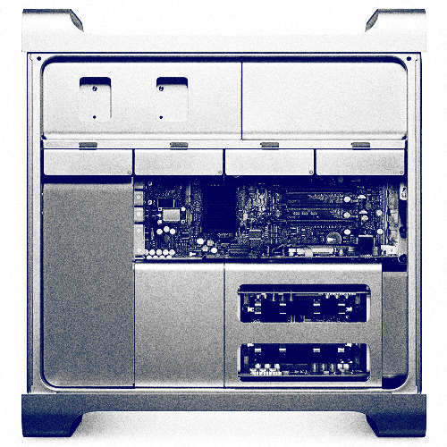

Apple Mac Pro: Tinte auf dem Füller
Ich bin ja persönlich ein Verfechter des portablen Computers geworden, und genieße es dem gemeinen Desktoprechner einen baldigen, grausamen Tod zu prophezeien. Angesichts solcher Daten...
Apple kombiniert zwei der neuen Quad-Core Xeon Prozessoren in 45-Nanometer-Technik zu einem 8-Kern-System. Um die Bedürfnisse von "Kreativprofis, 3D-Künstlern und Wissenschaftlern" aber auch richtig zu befriedigen, könnte man sich bis zu 32 GB Arbeitsspeicher, vier Terabyte Speicherplatz und bis zu vier Grafikkarten mit jeweils bis zu 1,5 GB internem Speicher dazu gönnen, wenn man will und sowieso gerade kein Auto kaufen wollte.

..., die der neue Mac Pro vorzuweisen hat, kriege ich allerdings schon Lust den mal unter meinen Schreibtisch zu stellen und damit zu arbeiten. Und warum? Schwer zu sagen, jedoch dürften die Gründe in etwa die gleichen sein, weshalb man sich als kleiner Pennäler auf dem Zeltlager unbedingt das größte Messer an den Gürtel schnallen musste.
9 Kommentare zu "Apple Mac Pro: Tinte auf dem Füller"
- Externe Links im selben Fenster öffnen
- Externe Links in neuem Fenster öffnen
magnus
Schwanzverlängerung für den Computer Nerd, was? Also meiner hat einen eingebauten Teekocher drin, damit kann ich doppelt so lange wach sein und wieder super früh aufstehen.....
Lex Dildo
Läuft dadrauf GTA4?
Herschel Rubinstein
@magnus: meiner hat einen eingebauten fußmassageapperat, falls meine mauken weh tun, nachdem ich den ganzen tag vor dem computer gesessen und keinen schritt vor die tür gemacht habe.
@lex: bestimmt, wenn es denn mal für pc draußen ist.
Rick
Wobei ein Messer ja nach 4 Jahren wenigstens immer noch ein Messer war, es sei denn man hat damit zuviele Leute ums Eck gebracht. Der Computer-Nobelhobel von heute ist der Elektroschrott von morgen. Freundinnen zB halten sich dann schon noch ein paar Jahre länger, wenn in deren frühen 20ern akquiriert und sorgsam gepflegt. TCOmäßig liegen sie allerdings Nähe Nobelhobel...
Herschel Rubinstein
also das finde ich jetzt aber fragwürdig, computer und frauen zu vergleichen.
einen apple-omputer kann man übrigens, wenn er zu stressig wird, ausschalten und sich an seiner schönheit ergötzen. versuch das mal mit einer frau (ohne mit dem gesetz in konflikt zu geraten)
Rick
Du hast natürlich recht, Herschel, in mancherlei Hinsicht hat der Apple Vorteile. Ich gehe davon aus dass Du darauf auch Pheromone 2.0 installiert hast. Dafür kann man eine Frau auch ohne Schraubenzieher ausziehen, ein Vorteil für Leute die keine Werkzeugfetischisten sind. Deutlich billiger hingegen als beide ist jedoch GlenDingsbums, und man leistet damit sogar noch Entwicklungshilfe für Schwellenländer wie Schottland, Irland oder Canada...
nils
naja. das beste ist: 2 dualcore prozessoren und 4gb ram, und nichma die lüfter gehn an. die frau ist doch schon aus der puste, wennse mal die bierkiste bis innen dritten stock schleppen muss. hab ich selbst erlebt. ehrlich!
crucible
Yeah. Das wäre schon was! Und ich könnte Nordkorea auch noch Rechenkapazität.....zur Berechnung von Raketenflugrichtungen...oder so....anbieten... aber ist schon ein cooles Teil. Hätte ich sehr gerne!!!!
Herschel Rubinstein
@rick: werkzeugfetischismus hin oder her - im geistigen getränk liegt letzlich aller segen.
@nils: der gleichberechtigung halber muss ich ergänzen, dass es auch den ein oder anderen mann gibt, der schon im ersten stock anfängt den ballast der bierkiste umzulagern.
@crucible: "kim yong-il @ home"? habe ich auch mal drüber nachgedacht, aber mit dem kommunismus habe ich gebrochen, als ich 7 war 8)